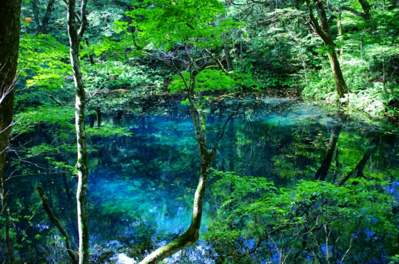
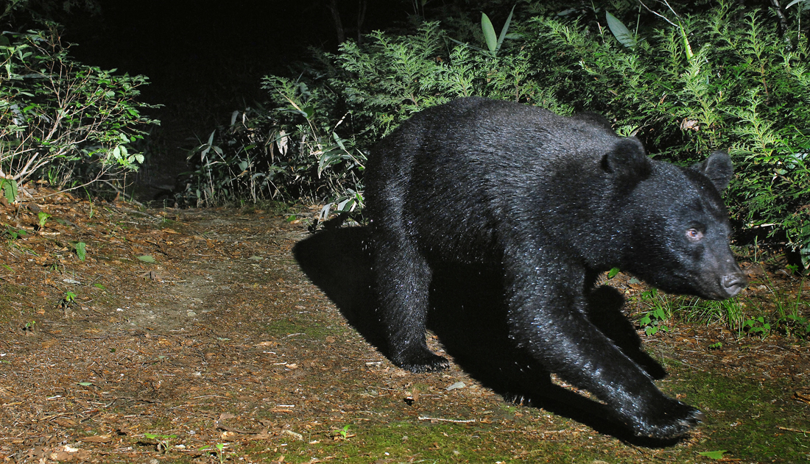
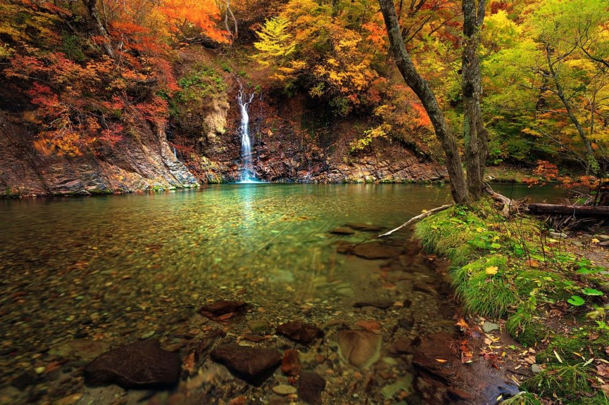
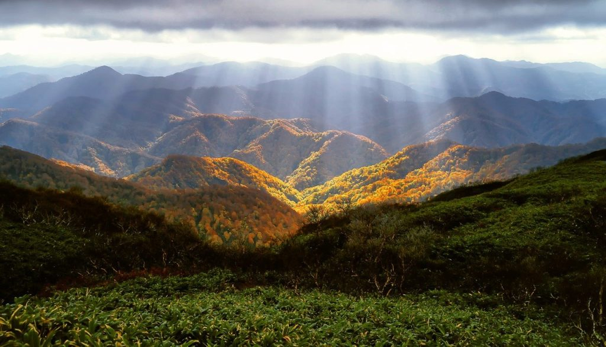
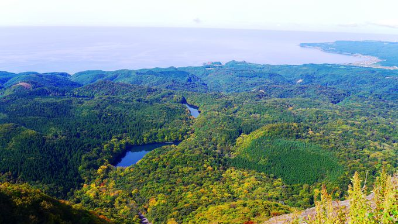
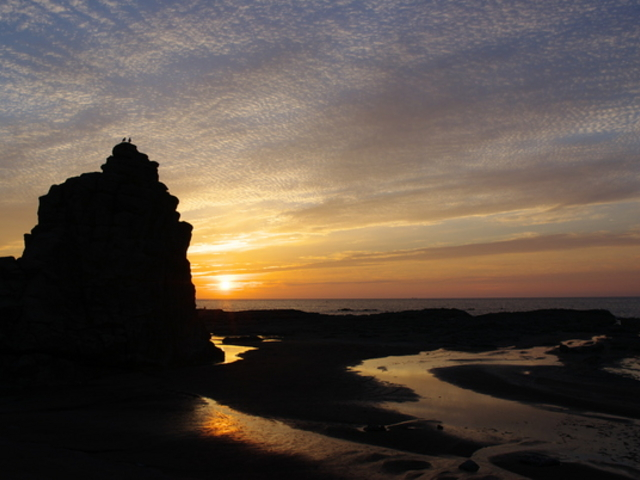
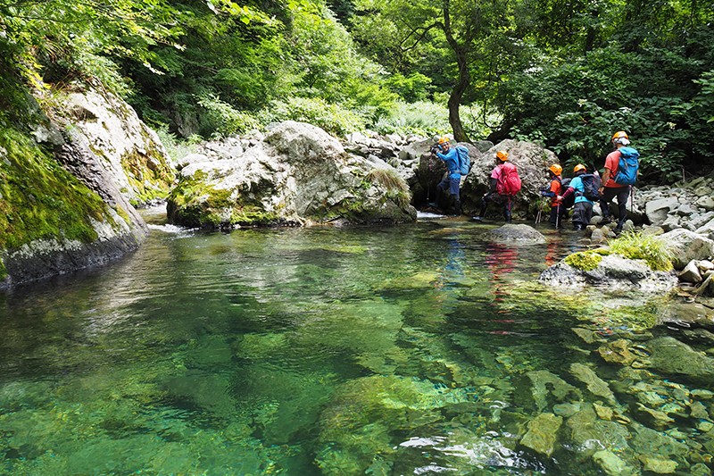

白神山地
東アジア最大級の原生的なブナ林が織りなす自然の絶景
『白神山地』




ブナ林は、かつて日本各地に存在していたが、用材や薪炭材として伐採が進み、ほとんどが人工林や二次林になっている。
しかし、白神山地のブナ林は人里から遠く、地形が急峻だったことも幸いして、人々に伐採されずに済んだ。
核心地域のブナ林には、今も林道や歩道、建築物が存在せず、高い原始性が保たれている。
またこの地域は、約250年前の新生代第四期初期までは一部が海域にあったが、第四期後期に起こった急速な隆起によって産地ができた。
この一帯では、年間約1.3mmという日本列島の中でも極めて速い速度で隆起が始まり、現在まで続いている。
崩れやすい地層に加え、日本有数の多雪地帯であるため、大量の水分が流れ込むことで地滑りが起こりやすくなる。
この地滑りによって、数多くの河川や谷が白神山地一帯に誕生し、何万年もの間、隆起と崩落を繰り返して独特の地形を形成してきた。

大崩展望所
十二湖を一望できる絶景スポット。十二湖の風景と日本海を同時に楽しめる贅沢な時間になるでしょう。

千畳敷海岸
「日本の夕陽百選」にも選ばれており、日本海岸に沈む美しい夕日に感動すること間違いなし！

沢歩きツアー
ツアーに参加すれば、「沢歩き」だからこそ体感できる白神山地の自然の神秘に出会えるはず！
ラフティング
白神山地に源流を持つ岩木川で大人も子供も大自然に触れて思いっきり楽しもう！